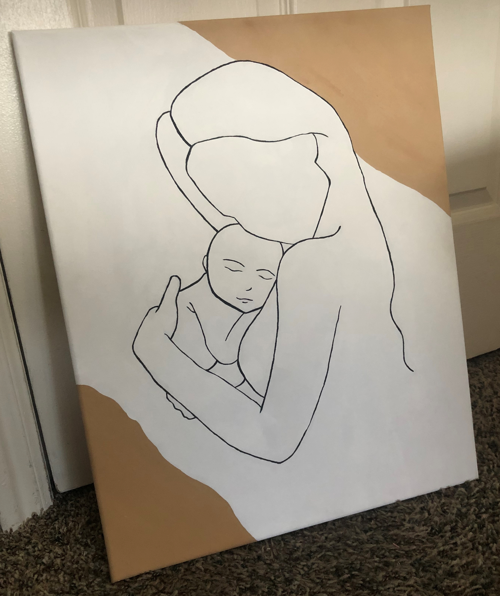
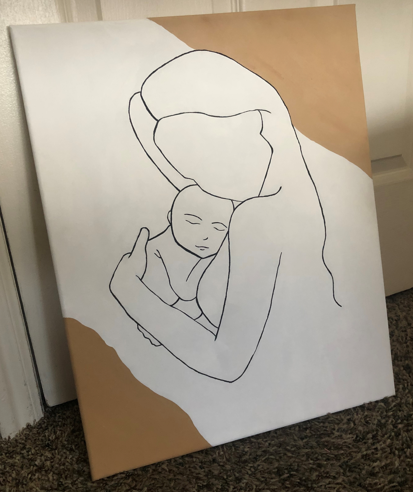

A little bit about me: I grew up in a tiny farming town in Colorado with my brothers and sister. My hobbies include painting, playing volleyball, petting dogs, and spending time with my boyfriend. I have posted below pictures of my artwork, a painting video you can follow along with, and my resume. Check it out!
My Artwork

 

Painting Follow Along Video
Kyra Loutensock
randomEmail@spam.com123-456-7890
1234 N 567 W Provo, UT 84604
-
Education
- Brigham Young University, BS
-
- 2019-2024
- Holyoke High School, Diploma
-
- 2015-2019
- Class Valedictorian
-
Work Experience
- Nutriient, Secretary
-
- May 2021 - Present
- Assisted CEO with everyday duties, managed schedules, inputted inventory, assisted in production lines, and aided fulfillment
- Fastericse, Project Intern
-
- January 2021 - April 2021
- Conducted research and developed the marketing tunnel
-
Skills
- Database design and development
- Entity-relationship diagramming
- Structured query langauge (SQL)
- Tableau
- Excel Solver, PivotTables, and Charts
- HTML, CSS, Bootstrap
- Flowchart diagramming
- Visual Basic for Applications (VBA) programming in Excel